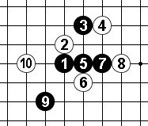
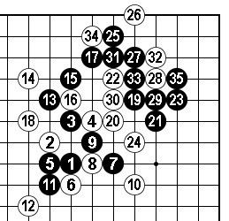
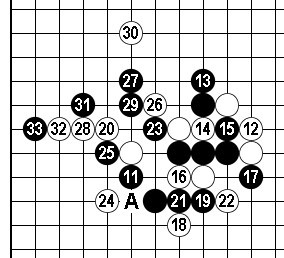

第11届世锦赛对局点评（QT）陈科翰（中国台北）VS 曹冬
#1 第11届世锦赛对局点评（QT）陈科翰（中国台北）VS 曹冬 作者：有志青年 发表时间：2009-8-5 9:24:42
第5轮 黑方：陈科翰（中国台北）VS 白方：曹冬 和棋
由于还未在官网看到完整对局谱，中国连珠网看到部分对局。

图一：实战谱(1~10) 溪月开局几打不清楚，不过这种开局选点繁杂对棋手基本功要求较高。初看实战谱的黑5马上想到了参考图一的变化，再仔细看了看发现有盘端问题。不知道实战黑7变招是否也是看清了盘端差异？还是临场的构想？黑9虽然是黑7之后展开的棋形，但白10之后11选点难。

参考图一：近年国内比赛经常能看到的变化。如图一按照本图的次序走，35之后会发现盘端差一路黑的双杀不成立。这个定式如白4在8位的话黑13-15就简单必胜，因为盘端较本图大黑容易胜。本图的13关键，如单走15位，白13位防黑无胜。

图二：实战谱（11~33）11第一感应该着于A位（全局黑不乐观），实战的11被12强手牵制后局势逆转。至19大致如此，20显而易见的好点。22值得推敲。22-A黑右边应该无胜。那样更能发挥20的效力，可能是曹冬时限问题吧，22、24稳健。26个人感觉可以考虑先31出动，实战26以下白控制的不错，全局依然有望。 最终报道说是在大优形势下因时限问题和局，那样在所剩的下面两轮中还是要稳中求胜。#2 Re:第11届世锦赛对局点评（QT）陈科翰（中国台北）VS 曹冬 作者：不夜之侯 发表时间：2009-8-5 16:00:23
老师讲的很精彩！另外如黑11手-9的左边如何？
#3 Re:第11届世锦赛对局点评（QT）陈科翰（中国台北）VS 曹冬 作者：不夜之侯 发表时间：2009-8-5 16:02:43
请教二楼疑问，谢谢！
#4 Re:第11届世锦赛对局点评（QT）陈科翰（中国台北）VS 曹冬 作者：淡红的秋樱 发表时间：2009-8-5 21:53:30
充分发挥了曹东实战的优势，不过。。。这个开局确实不是太妙
=======上图对应的爱五子棋谱代码如下，以便你拆解：========
h8g9h10i10g8h7i9
======================================================